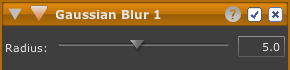

Sfocatura gaussiana
Lo strumento Sfocatura gaussiana consente di sfocare alcune o tutte le parti di una foto in base al raggio specificato. Questo strumento può essere usato per creare un effetto sfocato o per correggere imperfezioni o sgranature.
Per sfocare una foto:

- Fare clic sul pulsante dello strumento di sfocatura nella barra degli strumenti. Sarà visualizzato un nuovo strumento di sfocatura in cima alla pila strumenti.
- Usare il dispositivo di scorrimento Raggio per regolare l'effetto di sfocatura:
- Il dispositivo di scorrimento Raggio consente di controllare l'ampiezza dell'effetto sfocato intorno a ogni pixel.
- In alternativa: